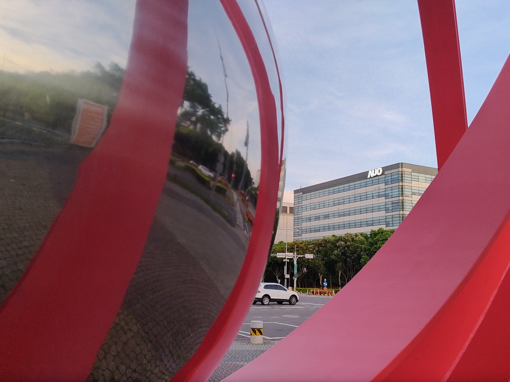

Eleven Percent for a Hole in Glass
SEPTEMBER 21, 2026

Intel opened Monday, September 21, sharply higher and stayed there, closing up roughly 11 percent at about $121 after a Friday close near $108.50. On roughly five billion shares outstanding, that is something like sixty billion dollars of market value added in a session. The reported reason: Intel is working with AU Optronics — AUO, the Taiwanese display-panel maker — on Micro LED-based advanced packaging, embedding chips into glass substrates and wiring them up with through-glass vias, aimed at co-packaged optics and high-density compute.
That sentence contains four pieces of jargon and one fact about money. It is worth pulling apart, because the engineering underneath it is genuinely one of the more important problems in computing right now — and because the thing that moved sixty billion dollars was a newspaper story that neither company has confirmed.
What Was Actually Reported, and What Wasn't
The chain starts in Taipei. Taiwan's United Daily News and its business title Economic Daily News ran the story on the morning of September 21; DigiTimes and the trade press picked it up within hours; US premarket coverage followed. Intel declined to comment. AUO has not issued a press release naming Intel. The closest thing to a company statement is chairman Paul Peng telling an earnings call that AUO is working on advanced packaging and glass substrates with partners he would not name.
So the load-bearing public artifacts are a Taiwanese newspaper report, a US patent — Intel holds one titled, in the flat poetry of the patent office, IC Package with Micro LEDs, covering chips embedded in glass with through-glass vias feeding them — and a set of technology demonstrations AUO made at SEMICON Taiwan on September 2–4. That is a real pattern of evidence. It is not a signed deal, and the difference matters for anyone reading the tape.
Co-Packaged Optics, in Plain Terms
Here is the problem the whole thing exists to solve. Inside an AI datacenter, the chips have gotten very fast and the wires between them have not. Today, when a signal leaves a switch or an accelerator to travel more than a few centimeters, it goes out through a pluggable optical transceiver — a module the size of a stick of gum that plugs into the front panel, converts electrical signals to light, and sends them down a fiber. Those modules work. They also sit at the edge of the box, which means the electrical signal has to survive the whole journey across the circuit board first, burning power and degrading the further it goes.
Co-packaged optics moves the light-making apparatus off the front panel and into the chip package itself, sitting beside the silicon. The electrical distance collapses from centimeters to millimeters. Nvidia's own published comparison against pluggables claims roughly 3.5× better power efficiency, far better signal integrity, and about 10× better resiliency from having fewer active components in the path — and, at datacenter scale, tens of megawatts saved. TSMC's COUPE platform, which both Nvidia and Broadcom have said they use, is quoted at roughly half the power and a tenth the latency of the incumbent approach when integrated onto the packaging substrate, with a further step change promised when it moves onto the interposer.
Those are vendor numbers, and vendor numbers are always the best day the technology ever has. But the direction is not in dispute anywhere in the industry: within a few years, the interconnect inside an AI cluster is going optical, because copper runs out of headroom before the workloads do.
The Micro LED Wrinkle
Here is where the Intel–AUO report stops being a me-too story. Nvidia and Broadcom are doing this with silicon photonics — lasers, modulators, waveguides etched in silicon, running few channels extremely fast. What AUO has been demonstrating is different: arrays of Micro LEDs, the same technology the display industry spent a decade and a fortune trying to put in televisions and watches, used as optical transmitters.
AUO calls the architecture "wide and slow." Instead of a handful of very fast coherent channels, you use a massively parallel array of small, cheap, incoherent emitters, each running at a modest rate. The published specs from its SEMICON demonstrations: reach up to about 10 meters, stable to 125°C, an operating lifetime above 30,000 hours, with low power draw and therefore low added thermal load. Ennostar supplies the Micro LED transmitters, Tyntek the photodetectors on the receiving end, Daxin the redistribution-layer materials, Corning the glass.
Ten meters is the tell. This is not a technology for crossing a datacenter hall; it is for crossing a rack, or a row — exactly the distances that matter when a single "AI server" has become a refrigerator-sized assembly of dozens of accelerators that all need to talk to each other as though they were one chip. A parallel LED array has no laser to fail and is built on manufacturing lines that already exist at enormous scale. It also has a hard ceiling on reach that silicon photonics does not. Those are two different bets on the same future, not one bet with two logos on it.
Why Glass, and What a Hole in It Is Worth
The other half of the report is the substrate — the layered board the silicon sits on, which carries power up to the chip and signals out of it. For decades that has been an organic material: essentially a very sophisticated resin laminate. It is cheap, it is mature, and as AI packages have swollen to enormous sizes with stacks of high-bandwidth memory crowded around a processor, it has started to run out of road. Organic substrates warp when heated. Over a large package, warping means the chip and the board no longer line up where they are supposed to, which breaks the tiny solder connections between them.
Glass is dimensionally stiffer, flatter, and far more stable across temperature. When Intel announced its glass-substrate program in September 2023, its claims were a 10× increase in interconnect density against organic, 50 percent less pattern distortion, tolerance of higher temperatures, and flatness good enough to improve the depth of focus for lithography on the package itself — all of it framed as the road to a trillion transistors in one package by 2030. In January 2026 Intel showed the first sample joining its EMIB bridging technology to a glass core without micro-cracking.
The hard part — the part the whole industry is stuck on — is the through-glass via. To get power and signals from one face of the substrate to the other you have to drill microscopic holes clean through a brittle sheet, hundreds of thousands of them, perfectly positioned, and then reliably fill them with metal. Glass does not enjoy being drilled. TGV yield is the gating step on the whole transition, and the consensus window for glass substrates reaching real commercial volume is somewhere in 2027–2030.
Which is the precise reason a display company is in this story at all. Nobody on earth has more experience handling huge sheets of thin glass through high-precision patterning steps at industrial yield than the panel industry. AUO has the glass handling, the redistribution-layer process, and the Micro LED line — three of the things Intel's stated roadmap needs and does not own. Intel brings the packaging architecture, the customers, and a foundry business that needs something to sell that TSMC cannot sell better.
The display company you stopped thinking about. AUO is not a semiconductor company that happens to make screens. It is what is left of Taiwan's LCD panel industry after two decades of Chinese capacity, and its display business has been losing money — a net loss of about NT$1.14 billion in the first quarter of 2026, with the display segment still in the red in the second. Market expectations for 2026 have display falling below half of total revenue; management's stated target is for its two new business lines to be 70 percent of revenue by 2030. It has approved something on the order of NT$8.6 billion in capital spending for through-glass-via, redistribution- layer and glass-core pilot lines. Read the Intel report against that backdrop and the incentive is obvious in both directions: Intel needs glass expertise it does not have, and AUO needs a second act badly enough to fund the pilot lines before anyone has publicly ordered anything from them.
Where This Sits in Intel's Larger Story
Advanced packaging is the one part of Intel that never stopped being competitive. EMIB, its embedded silicon bridge for connecting chiplets side by side, and Foveros, its die-stacking technology, are shipping products, not slideware — and packaging capacity has been a genuine industry bottleneck, with TSMC's CoWoS allocation functioning as a hard constraint on how many AI accelerators the world can build. An Intel that can offer a differentiated packaging path — glass cores, optical I/O, EMIB — has something to sell to external customers that does not require first winning the leading-edge transistor race.
And it needs one. The company has spent 2026 rebuilding a balance sheet and a story at the same time: an unusual direct US government equity stake reported at $8.9 billion, a $5 billion investment from Nvidia, money from SoftBank, 18A in high-volume production at Fab 52 in Arizona with named commitments from Microsoft and AWS, and 14A in development in Oregon targeting volume production in 2028. The open question that has followed Intel Foundry from the beginning is unchanged: can it win a large, disclosed, external customer. Packaging is the likeliest place that first yes comes from, which is why a packaging headline moves this stock more than it would move most others.
Proportionate, or Speculative?
Both, and it is worth separating the halves.
The proportionate part: if you believe optical interconnect is where datacenter economics go next, and that glass substrates are how large AI packages get built after organic runs out, then an Intel that has locked in the one supplier ecosystem with genuine glass-at-scale manufacturing is worth repricing. That is not a rounding error in the story; it is arguably the whole story of Intel Foundry's differentiation.
The speculative part is everything else. There is no announced agreement, no scope, no term, no volume, no dollar figure, and no date. AUO's own stated ambition is to commercialize advanced CPO within two to three years, which is corporate for "not soon," and the industry's own TGV yield problem is unsolved in public. Nothing here shows up in revenue this year or next.
And Monday was not a clean experiment. The same session carried a Tigress Financial price-target raise to $145 from $118, fresh reports of memory-manufacturing talks with SK Hynix, and a broad semiconductor rally with the Nasdaq up over 2 percent. Assigning all eleven points to one unconfirmed Taiwanese newspaper story is a narrative, not a measurement. The most honest description of Monday is that a market already primed to believe an Intel turnaround story got handed a new reason to believe it, and did what primed markets do.
There is a version of this where, in three years, embedding LEDs in drilled glass turns out to be how the AI buildout got its bandwidth, and Intel bought the front of that queue for the cost of a partnership. There is another version where the through-glass via stays stubborn, silicon photonics gets there first, and this is a patent and a press cycle. Monday priced the first one. Neither company has yet said which it is.
Where I Could Be Wrong
- This may not be a partnership at all in any formal sense. The entire story rests on Taiwanese press reporting — United Daily News and Economic Daily News, picked up by DigiTimes and the trade press. Intel declined to comment, AUO has not confirmed it, and I have found no signed agreement, joint statement or filing from either company. "Reportedly in talks" and "partnering" are being used interchangeably in coverage; they are not the same thing.
- The exact size of the move depends on which quote you use. Premarket figures ranged from about 5.9 percent early to over 11 percent later in the session, and the close I have is roughly 11 percent to about $121 from a Friday close near $108.50. The "about sixty billion dollars" figure uses a share count of roughly five billion from a data aggregator, not from a filing I've read, so treat it as an order of magnitude rather than a number.
- The Micro LED versus silicon photonics framing is mine. Reporting treats them as complementary; I have described them as two distinct bets. That is my reading of the reach and channel architecture, not a claim either company has made, and it is entirely possible Intel intends to ship both for different distances.
- All the performance numbers here are vendor numbers. Nvidia's power and resiliency multiples, TSMC's COUPE figures, Intel's 10× interconnect density, AUO's 10 meters and 30,000 hours — every one comes from the company selling the technology, measured under conditions it chose. I have found no independent benchmark for any of them.
- The "packaging is Intel's best path to a foundry customer" argument is an inference. It is a widely held one, but Intel has not said it, and a leading-edge logic win on 14A would change the picture more than any packaging deal.
- I hold no position in Intel, AUO, Nvidia, TSMC or any of the suppliers named here. My own book is Bitcoin through an ETF and Strategy Inc. An Intel packaging partnership is a story about where compute capacity comes from, not about monetary policy or scarcity, and it changes nothing about what I own or why. None of this is investment advice — it is one reader working out what a headline actually said.
Sources
- MicroLED-Info. Intel to partner with AUO on microLED packaging for next-gen optical I/O solutions. 21 September 2026. microled-info.com
- DigiTimes. Intel reportedly in talks with AUO on advanced packaging. 21 September 2026. digitimes.com
- Wccftech. AU Optronics And Intel Could Reshape Chip Packaging, Merging Micro LED Displays With Silicon & CPOs To Chase AI Demands (citing United Daily News). September 2026. wccftech.com
- Investing.com. Why is Intel stock surging today? 21 September 2026. investing.com
- Tradingpedia. Intel Premarket Rally Fueled by Micro LED AI Packaging. 21 September 2026. tradingpedia.com
- AUO Corporation. AUO Showcases Micro LED Optical Communication and Glass Core Substrates Technologies at SEMICON Taiwan 2026. 31 August 2026. globenewswire.com
- Converge Digest. AUO Pushes Micro LED CPO and Glass-Core Packaging. September 2026. convergedigest.com
- Intel Corporation. Intel Unveils Industry-Leading Glass Substrates to Meet Demand for More Powerful Compute. 18 September 2023. intc.com
- Tom's Hardware. Nvidia outlines plans for using light for communication between AI GPUs by 2026. tomshardware.com
- TrendForce Insights. Glass Substrates Are Breaking Through the AI Chip Packaging Bottleneck. 2026. insights.trendforce.com
- Tech Soda. Global Market Watch: Intel Reportedly Working on Advanced Packaging for CPO with AUO (citing UDN Money). 21 September 2026. techsoda.substack.com
- AUO Corporation. AUO Corporation Reports First Quarter 2026 Financial Results. 30 April 2026. auo.com